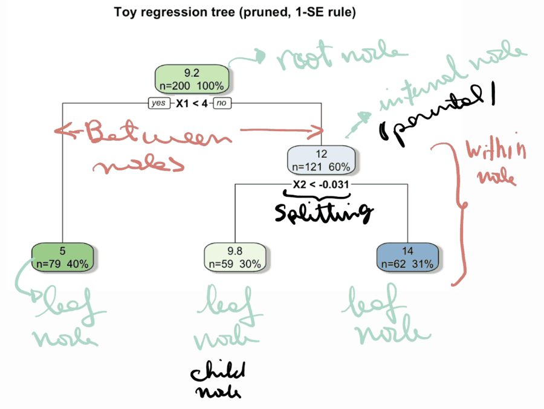
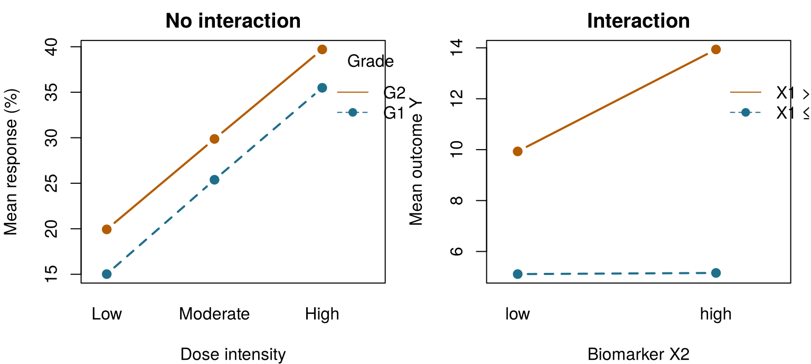
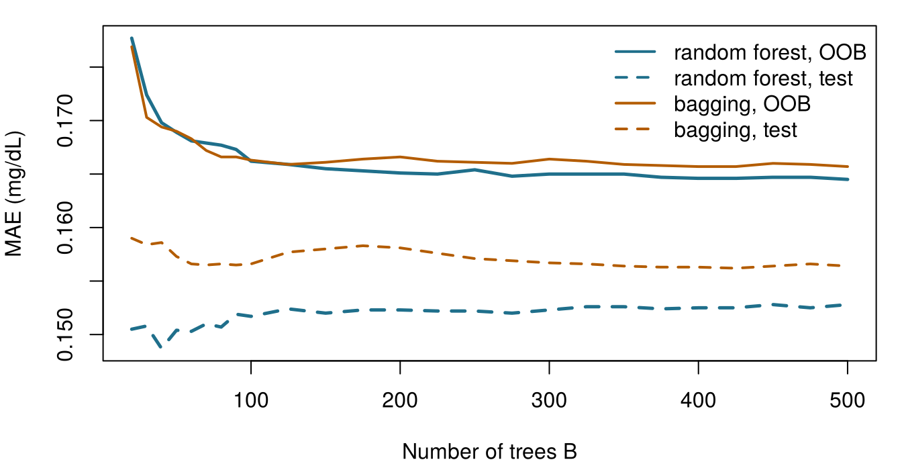
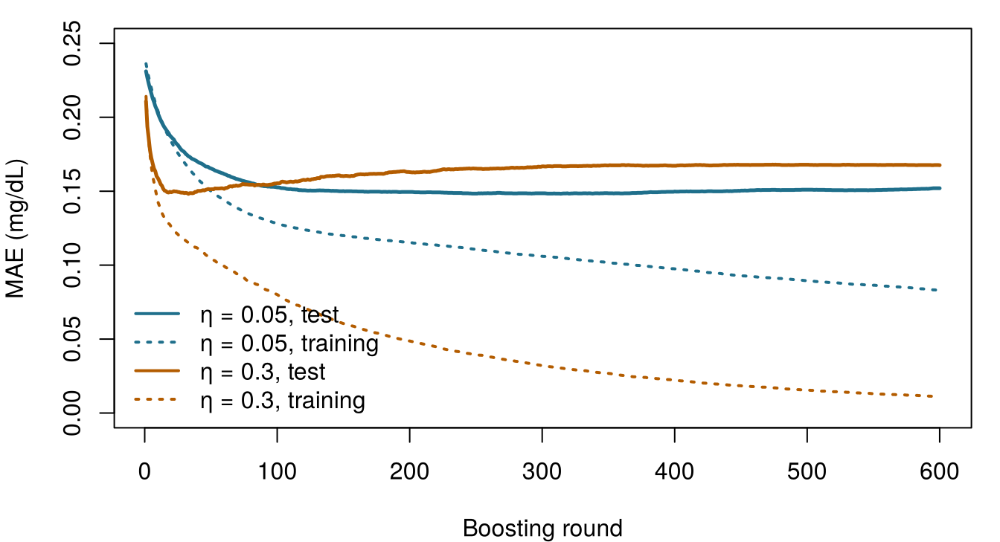

It is 7 am on Ward 7, the intensive care unit. Seán, the ward pharmacist, has spent the night reviewing drug doses for patients at risk of acute kidney injury (AKI: a rise in creatinine of at least 0.3 mg/dL within 48 hours (Kidney Disease: Improving Global Outcomes (KDIGO) Acute Kidney Injury Work Group 2012)). “The risk scores are fine,” he tells Dr Emma Walsh, the intensivist, “but at 3 am I need something I can follow without a computer: a few questions, in order, that end in a risk.” Emma smiles: that is exactly what a decision tree is.
A few corridors away, the ONCO-1 trial team (the randomised trial of chemotherapy versus no chemotherapy from Chapter 1) has just received a report from a consultant: a boosted-tree model that predicts which patients respond to chemotherapy with an area under the ROC curve of 0.998. Nearly perfect. Should they believe it? This chapter builds the tools behind both stories, and ends with a checklist for the second one.
Here is a small tree learned from the 1 000 training patients of Ward 7. Start at the top, answer each question for the patient, and follow the branch until you reach a box with a risk. What AKI risk does the tree give to each of tonight’s three patients? Take your best guess; the chapter explains where the tree comes from.
Patient
SOFA
Baseline creatinine (mg/dL)
AKI risk from the tree
Aoife Byrne, 71, sepsis
6
1.0
Tomás Ruiz, 54
3
0.9
Priya Nair, 38
12
1.5
How to use this chapter
Starting here?
This chapter borrows a few ideas from earlier chapters. In one line each:
Training and test sets. A model is fitted on training data and judged on a test set it has never seen (Section 1.8). This chapter uses the book’s shared splits from Chapter 3, stored in data/splits/: 1 000 training and 250 test patients for Ward 7, 800 and 200 for ONCO-1, with the training patients divided into five fixed cross-validation folds. Every model in Part II is judged on the same patients.
Overfitting and cross-validation. A flexible model can memorise noise; \(V\)-fold cross-validation estimates performance on new data while choices are being made (Definition 1.8, Definition 1.9). A hyperparameter is a setting that controls how a model is learned rather than being learned itself (Chapter 3).
Error metrics. The mean absolute error (MAE) and root mean squared error (RMSE) measure how far numerical predictions are from the truth (Chapter 3).
Linear and logistic regression predict with a weighted sum of the features (Chapter 4, Chapter 5); the area under the ROC curve (AUC) is the probability that a randomly chosen patient with the event receives a higher score than one without it (Chapter 5).
Leakage is information in the features that would not be available, honestly, at the time of prediction (Chapter 3). Entropy measures surprise (Chapter 2).
Example
Who or what
Outcome
Faces you will meet
1Ward 7 ICU
1 250 ICU patients in 4 hospitals
change in creatinine over 48 h (acute kidney injury if ≥ 0.3 mg/dL)
Aoife (71, sepsis, borderline risk), Tomás (54, low risk), Priya (38, high risk); Dr Emma Walsh; Seán, the pharmacist
2ONCO-1 trial
1 000 patients randomised to chemotherapy or not
tumour shrinkage (%)
patients #0042 and #0917
3HomeBeat
500 people wearing a smartwatch at home
stress score, deterioration event
Lena
4CellWorks
420 production batches of a cell therapy
potency score
batch CW-118
All four datasets are simulated and can be downloaded from the data appendix. The full introduction is in Section 1.1.
This chapter is about models made of questions. It has fourteen sections and a Lab, seven quick checks, three “Try it” widgets (grow a tree, draw bootstrap samples, step through boosting), a challenge and three coding missions in R and Python. Allow about two hours. Forests with hundreds of trees and XGBoost models are trained once, outside the browser, and their results are loaded here; everything else runs live.
Notation at a glance (for lookup only)
Symbol
Meaning
Section
\(R_1, \dots, R_{\lvert T\rvert}\)
the regions (leaves) of a tree \(T\); \(\lvert T\rvert\) is the number of leaves
Before we let a tree loose on clinical data, it helps to see one recover rules we already know. We simulate 200 instances with two features, \(X_1\) (think of something like age, between 0 and 10) and \(X_2\) (think of a biomarker, centred on zero), and an outcome \(Y\) produced by if–else rules plus a little noise:
Read the output from the top. Node 1 is the root: all 200 instances, with mean 8.89. The first question is “is \(X_1 < 4.04\)?”. Those who answer yes (92 instances) end in a final box, a leaf, that predicts 5.13. The others are asked a second question, “is \(X_2 < 0.01\)?”, which sends them to leaves predicting 9.93 or 13.94. The tree has rediscovered the three rules of Equation 6.1 almost exactly, with thresholds of about 4 and 0, from nothing but the data. Each path from the root to a leaf is one rule (Breiman et al. 1984; Hastie, Tibshirani, and Friedman 2009, ch. 9):
Figure 6.1: The toy tree seen from above. Each dot is an instance, shaded by its outcome; the tree cuts the plane into three rectangles and predicts one constant (printed) in each.
This is what a regression tree does to any dataset: it chops the space of features into rectangles and predicts a constant in each. The rest of the chapter explains how it chooses where to cut, how deep to go, and why, in practice, we rarely trust a single tree.
6.2 The anatomy of a tree
The vocabulary comes from botany, turned upside down: the root is at the top and the leaves at the bottom. Figure 6.2 shows the same toy example annotated by hand.

Figure 6.2: The anatomy of a decision tree, annotated on an earlier run of the toy simulation (so the numbers differ slightly from those above). Each box shows the predicted value, the number of instances and their percentage of the sample.
Definition 6.1 (Decision tree) A decision tree predicts an outcome by asking a sequence of yes/no questions about the features, each of the form “is \(x_j \le s\)?” for a feature \(j\) and a threshold \(s\) (or “is \(x_j\) in this group of categories?”). Its parts are:
the root node, which contains all training instances;
internal nodes, each holding a split (the question) that sends instances to its two child nodes;
leaves (terminal nodes), which make the prediction: the mean outcome of the training instances that reach them in a regression tree, or the class proportions in a classification tree.
The depth of a tree is the number of questions on its longest root-to-leaf path.
Each node also carries within-node information (its prediction, the number of instances and their share of the sample) that summarises the subgroup created by the questions above it, while the splits carry the between-node logic that routes each instance. A child either becomes an internal node, if splitting it further is worthwhile, or a leaf.
They read like clinical reasoning. Each prediction can be traced along one path of questions, which can be checked against clinical knowledge and written on Seán’s card.
They are local. Unlike a linear model, which assumes one relationship for everybody, each branch can behave differently. Thresholds, plateaus and abrupt changes are natural.
They find interactions on their own (see below).
They do not care about scale. A split depends only on the order of the values, so lactate in mmol/L or mg/dL gives the same tree, and there is no need to standardise features. Categorical features are handled directly, and some implementations route instances with missing values through surrogate splits.
Their weaknesses are just as real. Predictions jump from one constant to the next at each threshold; and, as we will see in Section 6.6, a small change in the data can produce a very different tree.
6.2.1 A very short introduction to interactions
Two features interact when the effect of one on the outcome depends on the value of the other. In a linear model an interaction must be written in by hand, as a product term such as \(\beta_3 x_1 x_2\) (Chapter 4). In a tree it appears by itself: a split on \(X_2\) that sits below a split on \(X_1\) applies only to the instances on that side of \(X_1\). In the toy example, \(X_2\) matters only when \(X_1 > 4\). Clinical examples are everywhere: a drug that works well in younger patients and less well in older ones, because of how they metabolise it; a gene whose expression predicts response only in high-grade tumours; a dose–response curve that is steep in patients with good performance status and flat in frail ones; and, in genetics, the interaction between genotype and environment that shapes a phenotype.
An interaction plot shows the mean outcome for each combination of two features. Parallel lines mean no interaction; lines that diverge or cross mean an interaction (Figure 6.3).

Figure 6.3: Left: simulated tumour response with no interaction: the effect of dose is the same in both tumour grades, so the lines are parallel. Right: the toy data: the effect of the biomarker X2 is zero when X1 ≤ 4 and large when X1 > 4, so the lines diverge.
In ONCO-1 there is a built-in interaction of the same kind: dose intensity can only matter for patients randomised to chemotherapy, because everyone in the control arm has a dose of zero. A tree discovers this by splitting on treatment first and on dose only within the chemotherapy branch.
Aoife (71, sepsis; on Ward 7) reaches a leaf of a regression tree for the change in creatinine that contains 464 training patients. What does the tree predict for her?
6.3 How a tree learns: impurity and splits
A regression tree is a piecewise-constant function. If its leaves are the regions \(R_1, \dots, R_{\lvert T\rvert}\) of the feature space, it predicts
where \(\mathbf{1}\{\cdot\}\) equals 1 when the condition is true and 0 otherwise, and \(\bar y_{R_m}\) is the mean outcome of the training instances in region \(R_m\). Seen this way, a tree is a linear model in a set of yes/no indicator features, but indicators that are learned from the data instead of being chosen by the analyst. Where a linear model tilts a plane, a tree builds a staircase.
Finding the best possible set of rectangles is computationally hopeless, so trees are grown greedily, one split at a time, by the CART algorithm (classification and regression trees) (Breiman et al. 1984). At a node containing the instances \(S\), CART tries every feature \(j\) and every threshold \(s\), sends instances with \(x_j \le s\) to a left child \(S_L\) and the rest to a right child \(S_R\), and keeps the split that makes the children as homogeneous as possible.
Definition 6.2 (Impurity and impurity reduction) The impurity\(I(S)\) of a node measures how mixed the outcomes of its instances are; it is zero when they are all alike. For a numerical outcome it is the within-node variance, \[
I(S) = \frac{1}{\lvert S\rvert}\sum_{i \in S} \left(y_i - \bar y_S\right)^2 .
\] For a categorical outcome with class proportions \(\hat p_1, \dots, \hat p_G\) in the node, it is the Gini index or the entropy, \[
I_{\text{Gini}}(S) = 1 - \sum_{g=1}^{G} \hat p_g^{\,2}, \qquad
I_{\text{ent}}(S) = -\sum_{g=1}^{G} \hat p_g \log_2 \hat p_g .
\] A split of \(S\) into \(S_L\) and \(S_R\) is scored by its impurity reduction\[
\Delta I = I(S) - \frac{\lvert S_L\rvert}{\lvert S\rvert} I(S_L) - \frac{\lvert S_R\rvert}{\lvert S\rvert} I(S_R),
\] and CART chooses the split with the largest \(\Delta I\).
For a numerical outcome, maximising \(\Delta I\) is the same as minimising the total squared error of the two children,
The entropy is the same quantity that measured surprise in Chapter 2(Shannon 1948): a node where every patient has AKI holds no surprise, while a 50/50 node holds one full bit. When impurity is measured by entropy, \(\Delta I\) is called the information gain(Quinlan 1986).
A split by hand. A node holds 100 Ward 7 patients, 60 with AKI and 40 without. Its Gini index is \(1 - (0.6^2 + 0.4^2) = 0.48\). Split A sends 50 patients left (45 with AKI) and 50 right (15 with AKI). The left child has Gini \(1 - (0.9^2 + 0.1^2) = 0.18\), the right \(1 - (0.3^2 + 0.7^2) = 0.42\), so
Split B sends 90 patients left (55 with AKI, Gini about 0.475) and 10 right (5 with AKI, Gini 0.5): \(\Delta I_B \approx 0.48 - 0.9 \times 0.475 - 0.1 \times 0.5 \approx 0.002\). Split A separates the patients far better, and that is the one CART keeps.
Which of these nodes has the lowest Gini impurity?
6.3.1 What the search looks like in practice
For a continuous feature such as SOFA or a gene’s expression, the candidate thresholds are the midpoints between consecutive distinct values; for each one the algorithm computes \(\Delta I\) and keeps the best. Because only the order matters, no scaling is needed. For a categorical feature with \(m\) levels there are \(2^{m-1} - 1\) ways to split the levels into two groups; rpart, the R implementation of CART used in this book (Therneau and Atkinson 2023), avoids trying them all by ordering the levels by their mean outcome (or class mix) and testing only splits along that order. So it might discover, for instance, that tumour grades G2 and G3 behave alike and split them from G1. An ordered factor is treated like a number. When the feature used at a node is missing for an instance, rpart can send it down using surrogate splits: other features that mimic the primary split, which is handy for clinical tables with occasional gaps (missing data get their own chapter, Chapter 9).
Grow a tree on Ward 7. The tree below predicts the change in creatinine over 48 hours from two features of your choice, using the 1 000 training patients. Each coloured rectangle is a leaf; its colour is the leaf’s prediction. Increase the maximum depth one step at a time and watch two things: how the rectangles multiply, and what happens to the error on the 250 test patients. Target: find the depth at which the test error is smallest.
gt = {const fx = gtX, fy = gtY === gtX ? (gtX ==="sofa"?"baseline_creat":"sofa") : gtY;const rows = icuT.map(d => ({x: d[fx],y: d[fy],t: d.delta_creatinine_48h,set: d.set}));const train = rows.filter(d => d.set==="train"), test = rows.filter(d => d.set==="test");const minLeaf =10, maxD =8;functiongrow(idx, depth, box) {const n = idx.length;let tot =0, totss =0;for (const i of idx) { tot += train[i].t; totss += train[i].t**2; }const node = {n,mean: tot / n, depth, box};if (depth >= maxD || n <2* minLeaf) return node;let best =null;for (const f of ["x","y"]) {const s = idx.slice().sort((a, b) => train[a][f] - train[b][f]);let ls =0, lss =0;for (let k =0; k < n -1; k++) {const v = train[s[k]].t; ls += v; lss += v * v;const nl = k +1, nr = n - nl;if (nl < minLeaf || nr < minLeaf) continue;const a = train[s[k]][f], b = train[s[k +1]][f];if (a === b) continue;const sse = (lss - ls * ls / nl) + ((totss - lss) - (tot - ls) **2/ nr);if (!best || sse < best.sse) best = {sse, f,thr: (a + b) /2, k, s}; } }if (!best) return node; node.f= best.f; node.thr= best.thr;const bl = {...box}, br = {...box};if (best.f==="x") { bl.x2= best.thr; br.x1= best.thr; } else { bl.y2= best.thr; br.y1= best.thr; } node.left=grow(best.s.slice(0, best.k+1), depth +1, bl); node.right=grow(best.s.slice(best.k+1), depth +1, br);return node; }const [x1, x2] = d3.extent(rows, d => d.x), [y1, y2] = d3.extent(rows, d => d.y);constroot=grow(d3.range(train.length),0, {x1, x2, y1, y2});const predict = (node, p, D) => (node.f&& node.depth< D) ?predict(p[node.f] <= node.thr? node.left: node.right, p, D) : node.mean;const leaves = (node, D) => (node.f&& node.depth< D) ? [...leaves(node.left, D),...leaves(node.right, D)] : [node];const curve = d3.range(0, maxD +1).flatMap(D => [ {D,set:"training",mae: d3.mean(train, p =>Math.abs(p.t-predict(root, p, D)))}, {D,set:"test",mae: d3.mean(test, p =>Math.abs(p.t-predict(root, p, D)))}]);const testc = curve.filter(c => c.set==="test");const bestD = testc.reduce((a, c) => c.mae< a.mae? c : a).D;const label = k => [...gtChoices].find(e => e[1] === k)[0];return {root, train, leaves, curve, bestD, fx, fy,lx:label(fx),ly:label(fy)};}
{const tr = gt.curve.find(c => c.D=== gtDepth && c.set==="training").mae;const te = gt.curve.find(c => c.D=== gtDepth && c.set==="test").mae;const nl = gt.leaves(gt.root, gtDepth).length;const hit = gtDepth === gt.bestD&& gt.bestD>0;if (hit &&window.aihs) window.aihs.complete("ch06-tryit-grow");returnhtml`<p>Depth ${gtDepth}: <strong>${nl}</strong> leaves · training MAE <strong>${tr.toFixed(3)}</strong> · test MAE <strong>${te.toFixed(3)}</strong> mg/dL${hit ?" ✓ This is the depth with the lowest test error for these two features.":""}</p>`;}
{const lv = gt.leaves(gt.root, gtDepth);const jit = (i) => (((i *7919) %101) /101-0.5);const isInt = gt.train.every(d =>Number.isInteger(d.x));return Plot.plot({height:330,marginLeft:50,x: {label: gt.lx},y: {label: gt.ly},color: {type:"linear",scheme:"YlOrRd",domain: [0,0.9],legend:true,label:"Predicted change in creatinine (mg/dL)"},marks: [ Plot.rect(lv, {x1: d => d.box.x1,x2: d => d.box.x2,y1: d => d.box.y1,y2: d => d.box.y2,fill:"mean",fillOpacity:0.75,stroke:"currentColor",strokeWidth:0.6}), Plot.dot(gt.train, {x: (d, i) => d.x+ (isInt ?jit(i) *0.6:0),y:"y",r:1.4,fill:"currentColor",fillOpacity:0.35}), lv.length<=8? Plot.text(lv, {x: d => (d.box.x1+ d.box.x2) /2,y: d => (d.box.y1+ d.box.y2) /2,text: d => d.mean.toFixed(2),fontWeight:"bold",fontSize:12}) :null ] });}
The training error falls with every extra level of depth: a deeper tree always fits its own training data better. The test error falls at first and then stops improving or rises: the deep leaves contain a handful of patients each, and their means chase noise. This is overfitting (Definition 1.8), seen through the eyes of a tree. Try SOFA with baseline creatinine, then age with CRP: weak features produce rectangles that look busy and predict little.
6.4 CART in practice: growing, stopping and pruning
Left alone, greedy splitting continues until every leaf is tiny. Two kinds of control prevent this.
Stopping rules halt growth early. In rpart they are hyperparameters: minsplit (the smallest node that may be split, default 20), minbucket (the smallest allowed leaf, by default a third of minsplit), maxdepth (the maximum depth) and cp, the complexity parameter: a split is kept only if it improves the overall fit by at least the fraction cp. For classification, parms = list(split = "gini") (the default) or "information" (entropy) chooses the impurity.
Pruning works in the opposite direction: grow a large tree first, then cut back the branches that do not earn their keep. Stopping early can miss a weak split that would have made a very good split possible further down; pruning does not have that blind spot.
Definition 6.3 (Cost-complexity pruning) For a tree \(T\) with \(\lvert T\rvert\) leaves and residual sum of squares \(\text{RSS}(T)\) on the training data, cost-complexity pruning minimises \[
\text{RSS}(T) + c_p\, \lvert T\rvert ,
\] where the complexity parameter \(c_p \ge 0\) charges a price for every leaf (Breiman et al. 1984). As \(c_p\) increases from zero, the best subtree loses branches one by one, giving a sequence of nested trees from the full tree down to the root alone. The value of \(c_p\) is chosen by cross-validation. The 1-SE rule picks the simplest tree whose cross-validated error is within one standard error of the minimum.
(rpart scales \(c_p\) relative to the error of the root node; the idea is the same. In other books the complexity parameter is called \(\alpha\); we keep \(\alpha\) for the elastic-net mixing parameter of Chapter 4.) Cost-complexity pruning is the tree version of the penalties of ridge and lasso: a measure of fit plus a price for complexity.
Here is the whole routine on Ward 7: grow a large regression tree on the training patients, look at the cross-validated error of each subtree, and prune.
# xval = folds: rpart's cross-validation uses the five shared folds, so no seed is neededbig <-rpart(delta_creatinine_48h ~ site + age + sofa + lactate + map_min + baseline_creat + protocol_adherence + bun + crp + albumin,data = train, control =rpart.control(cp =0.001, minsplit =20, xval = folds))cpt <- big$cptable # one row per subtreebest <-which.min(cpt[, "xerror"]) # minimum cross-validated errorcp_min <- cpt[best, "CP"]cp_1se <- cpt[cpt[, "xerror"] <= cpt[best, "xerror"] + cpt[best, "xstd"], "CP"][1]tree_min <-prune(big, cp = cp_min)tree_1se <-prune(big, cp = cp_1se)tree_1se
Figure 6.4: Cross-validated error (relative to the root node) of the subtrees of the large Ward 7 tree, by number of leaves. The bars are ± one standard error; the dashed line is the minimum plus one standard error. The 1-SE rule picks the smallest tree below the line.
The large tree has 81 leaves. The subtree with the smallest cross-validated error has 6 and the 1-SE tree 6 (with the shared folds the two rules agree) and the pruned tree splits only on SOFA and baseline creatinine. These two trees are the ones compared with every other model of the book: the large tree (rpart, \(c_p = 0.001\), no pruning) and the 1-SE tree (the large tree pruned by the 1-SE rule). On the 250 test patients the mean absolute error is 0.195 mg/dL for the large tree and 0.186 for the 1-SE tree, against 0.236 for predicting the training average for everyone. Pruning removed most of the tree and made it more accurate: the extra leaves of the large tree were fitting noise. The small tree also fits on Seán’s card. When simplicity and accuracy pull in different directions, which to favour is not a statistical question: it depends on how the tree will be used, a theme we return to at the end of the chapter.
The stages of building a tree, and the rpart element that controls each, are summarised in Table 6.1.
Table 6.1: The stages of building a tree with rpart.
Stage
What happens
In rpart
Initialise
the root holds all training instances; its prediction is the mean (or the majority class)
automatic
Grow
search every feature and threshold for the split with the largest impurity reduction
method = "anova" or "class", parms
Split
replace the node by two children and repeat inside each
recursive
Stop
halt when nodes are too small, too deep or the gain is too small
minsplit, minbucket, maxdepth, cp
Prune
cut back to the subtree chosen by cross-validation
printcp(), prune(), xval
Predict
send a new instance down the questions to a leaf
predict()
After growing a large tree, why choose the subtree given by the 1-SE rule rather than the one with the smallest cross-validated error?
Your first tree on Ward 7. A tree of depth 3 has been grown on the training patients. The last line should measure its mean absolute error on the test patients. Fill in the blank with the data set the predictions should be made for.
rpart and scikit-learn (Pedregosa et al. 2011) use the same CART idea but different defaults (for example, rpart will not create leaves with fewer than 7 patients unless told to), so the two trees and their errors differ slightly. Both are correct.
6.5 Trees for classification
Everything so far carries over to a categorical outcome. A classification tree chooses splits by Gini or entropy instead of variance, and each leaf stores the proportion of each class among its training instances (Breiman et al. 1984; James et al. 2021, ch. 8). That proportion is the predicted probability; a class prediction follows from a threshold, which, as Chapter 5 showed, is a decision about costs rather than a property of the model.
The tree in the gate was grown exactly like this, on Ward 7 with AKI (yes/no) as the outcome and a maximum depth of 2:
The yprob column gives, for each node, the proportion without and with AKI. SOFA below 8.5 means SOFA of 8 or less, which is why the gate asked “SOFA ≥ 9?”. Read the leaf for Aoife: a risk of about one in three, above the threshold of 0.25 that her team set in Chapter 1 (Section 1.5), so the tree supports starting the kidney-protective bundle. Notice that Aoife and Tomás receive exactly the same risk, although Tomás is younger, less sick and has better blood pressure: a two-question tree cannot tell them apart. Coarseness is the price of a rule that fits on a card.
The gate tree is a teaching tree: its depth was fixed at 2. The tree that enters the book’s AKI comparison is grown the honest way, on the five predictors of the headline logistic model of Chapter 5 (SOFA, lactate, lowest blood pressure, baseline creatinine and protocol adherence) and pruned by the 1-SE rule with the shared folds. It keeps 4 leaves and gives tonight’s three patients the same risks (0.34, 0.34 and 0.84). On the 250 test patients its AUC is 0.733, against 0.855 for that logistic regression, which gives Aoife 0.49 and Tomás 0.07. A handful of leaves cannot rank patients as finely as a weighted sum of five features.
6.6 Why one tree is not enough
Trees are unstable: small changes in the training data can change the first split, and then everything below it. To see this, draw five new training sets by resampling the 1 000 Ward 7 patients with replacement (we will name this procedure in a moment) and grow a depth-2 tree on each.
Table 6.2: First and second splits of depth-2 trees grown on five resampled versions of the Ward 7 training set.
Sample
First split (root)
Second split, left branch
Second split, right branch
1
sofa< 8.5
sofa< 4.5
sofa< 12.5
2
sofa< 8.5
baseline_creat< 1.265
sofa< 11.5
3
sofa< 8.5
sofa< 5.5
baseline_creat< 1.335
4
sofa< 7.5
baseline_creat< 1.165
sofa< 11.5
5
sofa< 7.5
sofa< 3.5
baseline_creat< 1.095
SOFA dominates every time, as it should (it is the strongest predictor of kidney injury in these data), but the threshold moves, and the second question on the left changes from one sample to the next. Imagine five hospitals each printing “their” card. With more depth and weaker signals, as with thousands of genes, the disagreement becomes much larger. A single deep tree has low bias and high variance. The rest of the chapter is about fixing that by combining many trees.
6.7 Ensembles, the bootstrap and bagging
An ensemble combines the predictions of many models into one. The intuition is the same as asking several colleagues for an opinion: if their errors are not all the same, the errors partly cancel. Three families dominate practice:
bagging (and its refinement, random forests) trains models in parallel on resampled data and averages them, mainly to reduce variance;
boosting trains models in sequence, each correcting the errors of the ensemble so far, mainly to reduce bias;
stacking learns how to combine different kinds of models.
Trees are ideal ensemble members precisely because they are unstable: many slightly different trees have plenty of errors to average away.
Definition 6.4 (Bootstrap sample) A bootstrap sample of a dataset with \(n\) instances is a new dataset of \(n\) instances drawn from it at random with replacement: some instances appear two or more times, others not at all (Efron 1979). Repeating the draw many times mimics drawing new datasets from the population, using only the data at hand.
How many patients does a bootstrap sample leave out? Each draw misses a given patient with probability \(1 - 1/n\), so all \(n\) draws miss it with probability \((1 - 1/n)^n\). For \(n = 1\,000\) this is \(0.3677\), and as \(n\) grows it approaches \(1/e \approx 0.368\): about 37 % of the patients are left out of each bootstrap sample, and about 63 % appear at least once.
Draw bootstrap samples. Thirty patients, numbered 1 to 30. Each click draws a bootstrap sample: 30 draws with replacement. The number in each circle is how many times that patient was drawn; faded, dashed circles are patients left out (out of bag). Draw at least five samples and watch the average proportion left out.
viewof bsDraw = Inputs.button("Draw a bootstrap sample")
bs = {functionmulberry32(a) { returnfunction() { a |=0; a = a +0x6D2B79F5|0;let t =Math.imul(a ^ a >>>15,1| a); t = t +Math.imul(t ^ t >>>7,61| t) ^ t;return ((t ^ t >>>14) >>>0) /4294967296; }; }const n =30;const draws = d3.range(bsDraw).map(k => {const r =mulberry32(1000+ k), c =newArray(n).fill(0);for (let i =0; i < n; i++) c[Math.floor(r() * n)]++;return c; });return {n, draws};}
{const n = bs.n, last = bs.draws.length? bs.draws[bs.draws.length-1] :newArray(n).fill(null);const W =640, cols =10, cell =60, H =3* cell +10;const svg = d3.create("svg").attr("viewBox",`0 0 ${W}${H}`).attr("class","aihs-svg").attr("role","img").attr("aria-label","Thirty circles, one per patient, showing how many times each was drawn in the latest bootstrap sample."); last.forEach((c, i) => {const g = svg.append("g").attr("transform",`translate(${20+ (i % cols) * cell + cell /2},${10+Math.floor(i / cols) * cell + cell /2})`); g.append("circle").attr("r",22).attr("class", c ===0?"box":"box-accent").style("stroke-dasharray", c ===0?"4 3":null).style("opacity", c ===0?0.45:1); g.append("text").attr("text-anchor","middle").attr("dy","-0.1em").attr("font-size",15).attr("font-weight",700).text(c ===null?"": (c ===0?"–":"×"+ c)); g.append("text").attr("text-anchor","middle").attr("dy","1.5em").attr("font-size",10).attr("class","muted").text("#"+ (i +1)); });return svg.node();}
{const k = bs.draws.length;if (k ===0) returnhtml`<p>Click the button to draw your first bootstrap sample.</p>`;const oob = bs.draws.map(c => c.filter(v => v ===0).length/ bs.n);const last = oob[k -1], avg = d3.mean(oob);if (k >=5&&window.aihs) window.aihs.complete("ch06-tryit-bootstrap");returnhtml`<p>Sample ${k}: <strong>${Math.round(last * bs.n)}</strong> of ${bs.n} patients out of bag (${(100* last).toFixed(0)} %). Average over your ${k} samples: <strong>${(100* avg).toFixed(1)} %</strong>. Theory: (1 − 1/30)<sup>30</sup> = ${(100*Math.pow(1-1/30,30)).toFixed(1)} %, and 1/e ≈ 36.8 % for large samples.${k >=5?"✓":""}</p>`;}
Definition 6.5 (Bagging)Bagging (bootstrap aggregating) draws \(B\) bootstrap samples of the training data, fits one model \(\hat f_b\) to each, and averages their predictions (Breiman 1996a): \[
\hat f_{\text{bag}}(\mathbf{x}) = \frac{1}{B} \sum_{b=1}^{B} \hat f_b(\mathbf{x}).
\] For classification the trees vote, or their predicted probabilities are averaged.
Figure 6.5: Bagging with decision trees: each tree is grown on its own bootstrap sample of the training data, and their predictions are aggregated.
The recipe has five steps: (1) choose the number of trees \(B\), say 500; (2) draw a bootstrap sample of the training patients for each tree; (3) grow a deep, unpruned tree on each sample; (4) let every tree predict for a new patient; (5) average the predictions (or count the votes). Each tree overreacts to the quirks of its own sample (a few unusual patients drawn three times, others missing), but the quirks differ from tree to tree and largely cancel in the average. Averaging \(B\) predictions that each have variance \(\sigma^2\) and pairwise correlation \(\rho\) gives a variance of \(\rho\sigma^2 + (1 - \rho)\sigma^2 / B\)(Hastie, Tibshirani, and Friedman 2009, ch. 15): more trees shrink the second term, but the first term stays. Correlated trees cannot be averaged into certainty. Keep that formula in mind; random forests attack \(\rho\).
Definition 6.6 (Out-of-bag (OOB) error) Each instance is left out of about 37 % of the bootstrap samples. Its out-of-bag prediction is the average of the trees that did not see it during training, and the out-of-bag error is the error of these predictions over the training set. It estimates the test error without a separate validation set and almost for free (Breiman 2001; James et al. 2021, ch. 8).
A random forest is grown on the 1 000 Ward 7 training patients with 500 trees. About how many trees did not see Aoife’s twin, a training patient with the same profile as Aoife?
Bootstrap by hand. One bootstrap sample of the 1 000 Ward 7 training patients has been drawn for you as boot, a vector of patient numbers drawn with replacement. Complete the last line so that it gives the proportion of patients who are out of bag (not in boot).
seq_len(n) %in% boot is TRUE for every patient who was drawn at least once; ! turns it into “not drawn”. The blank is the name of the bootstrap sample.
mean(!(seq_len(n) %in% boot))
np.isin(np.arange(n), boot) is True for every patient drawn at least once; ~ turns it into “not drawn”. The blank is the name of the bootstrap sample.
np.mean(~np.isin(np.arange(n), boot))
6.8 Random forests
Bagged trees grown on the same data tend to look alike: if SOFA is the strongest feature, nearly every tree splits on SOFA first, and their errors are strongly correlated (a large \(\rho\) in the formula above). A random forest breaks this pattern with one more source of randomness (Breiman 2001).
Definition 6.7 (Random forest) A random forest is a bagged ensemble of deep trees in which, at every split, only a random subset of \(m_{\text{try}}\) of the \(p\) features is considered as candidates. Common defaults are \(m_{\text{try}} \approx \sqrt{p}\) for classification and \(p/3\) for regression (Liaw and Wiener 2002; Hastie, Tibshirani, and Friedman 2009, ch. 15). With \(m_{\text{try}} = p\) a random forest is ordinary bagging.
Forcing some trees to do without SOFA at some splits lets other features (baseline creatinine, lactate, blood pressure) have their say, so the trees disagree more and their average is more stable. Random forests have few hyperparameters that matter (the number of trees, which only needs to be “large enough”, \(m_{\text{try}}\) and the minimum leaf size), they rarely do badly with the defaults, and they come with an out-of-bag error estimate (James et al. 2021, ch. 8). In R the classic implementation is randomForest(Liaw and Wiener 2002); ranger(Wright and Ziegler 2017) is a faster alternative.
Figure 6.6 shows a forest of 500 trees grown on Ward 7, trained outside the browser.

Figure 6.6: Out-of-bag error (on the 1 000 training patients) and test error (on the 250 test patients) of a random forest and of plain bagging on Ward 7, as trees are added. Precomputed with scikit-learn.
Three lessons. First, more trees never hurt: the error falls and then flattens, so \(B\) is not a dial that causes overfitting; it only costs computing time. Second, the out-of-bag error tracks the test error closely, and if anything errs on the pessimistic side (0.165 against 0.153 for the forest at 500 trees), so in practice the forest can be tuned without touching the test set. Third, with only ten features, one of which dominates, the random forest and plain bagging end up about equally good here (test MAE of 0.153 and 0.156): decorrelating the trees helps most when many features carry overlapping signal.
You can grow a smaller forest yourself (200 trees take a second or two in the browser). Its errors will differ a little from those of the 500-tree scikit-learn forest above, which is the one used in every comparison of the book:
Variable importance. A forest is no longer a rule anyone can read, but it can still say which features it relies on. Impurity importance adds up, over all trees, the impurity reduction of the splits on each feature; permutation importance shuffles one feature at a time and measures how much worse the predictions become (Breiman 2001). On Ward 7 the impurity importances of the precomputed forest rank sofa, bun, baseline_creat at the top. Both measures are useful screening tools and both can mislead: impurity importance favours features with many possible split points, and correlated features share or steal each other’s credit (Strobl et al. 2007). Importance says what the model uses, not what causes the outcome. Chapter 12 returns to importance, explains it properly and criticises it.
6.9 Boosting: learning from the ensemble’s mistakes
Bagging grows its trees independently and averages them. Boosting grows them one after another, and each new tree concentrates on what the current ensemble still gets wrong. Its members are deliberately weak learners: shallow trees, often with one to a few splits, each only a little better than guessing. The strength comes from the sequence of small corrections, not from any single tree (Figure 6.7).
Figure 6.7: Boosting with decision trees: trees are grown in sequence, each one correcting the errors left by those before it.
Two families differ in how they focus on the mistakes (Figure 6.8).
Adaptive boosting (AdaBoost) gives every training instance a weight. After each round the weights of misclassified instances go up and those of correctly classified ones go down, so the next tree pays more attention to the hard cases; at the end the trees vote, each with a say proportional to its accuracy (Freund and Schapire 1997).
Gradient boosting fits each new tree directly to the residuals of the current ensemble (for squared error, literally \(y_i - \hat f(\mathbf{x}_i)\)) and adds a small fraction of it to the model (Friedman 2001). For other losses (logistic loss for yes/no outcomes, for example) the residuals are replaced by the gradient of the loss, hence the name.
Figure 6.8: Two ways of boosting. Adaptive boosting re-weights the instances; gradient boosting fits the residuals.
Definition 6.8 (Gradient boosting and the learning rate)Gradient boosting builds a model in rounds. It starts from a constant, \(\hat f_0(\mathbf{x}) = \bar y\), and in round \(m = 1, 2, \dots, B\) fits a small tree \(h_m\) to the current residuals \(r_i = y_i - \hat f_{m-1}(\mathbf{x}_i)\) (more generally, to the negative gradient of the loss), then updates \[
\hat f_m(\mathbf{x}) = \hat f_{m-1}(\mathbf{x}) + \eta\, h_m(\mathbf{x}).
\] The learning rate\(\eta\) (between 0 and 1) shrinks each correction. A small \(\eta\) learns slowly and needs more rounds, but usually generalises better (Friedman 2001; Hastie, Tibshirani, and Friedman 2009, ch. 10).
Step through boosting. The dots are the 1 000 Ward 7 training patients (SOFA, slightly jittered, against the change in creatinine). Round 0 predicts the average for everyone. Each round fits a stump (a tree with a single split) to the residuals and adds \(\eta\) times its prediction. Move the rounds slider one step at a time and watch the staircase form; then try a large and a small learning rate. Target: get the test error below 0.205 mg/dL.
boost = {const tr = icuT.filter(d => d.set==="train").map(d => ({x: d.sofa,y: d.delta_creatinine_48h}));const te = icuT.filter(d => d.set==="test").map(d => ({x: d.sofa,y: d.delta_creatinine_48h}));const xs =Array.from(newSet(tr.map(d => d.x))).sort((a, b) => a - b);const thr = xs.slice(0,-1).map((v, i) => (v + xs[i +1]) /2);const F0 = d3.mean(tr, d => d.y);const F = tr.map(() => F0), G = te.map(() => F0);const mae = (data, P) => d3.mean(data, (d, i) =>Math.abs(d.y- P[i]));const stumps = [], hist = [{m:0,set:"training",mae:mae(tr, F)}, {m:0,set:"test",mae:mae(te, G)}];for (let m =1; m <=100; m++) {const r = tr.map((d, i) => d.y- F[i]);let best =null;for (const s of thr) {let nl =0, sl =0, nr =0, sr =0, ssl =0, ssr =0; tr.forEach((d, i) => { if (d.x< s) { nl++; sl += r[i]; ssl += r[i] **2; } else { nr++; sr += r[i]; ssr += r[i] **2; } });if (!nl ||!nr) continue;const sse = (ssl - sl * sl / nl) + (ssr - sr * sr / nr);if (!best || sse < best.sse) best = {sse, s,a: sl / nl,b: sr / nr}; } stumps.push(best); tr.forEach((d, i) => { F[i] += bEta * (d.x< best.s? best.a: best.b); }); te.forEach((d, i) => { G[i] += bEta * (d.x< best.s? best.a: best.b); }); hist.push({m,set:"training",mae:mae(tr, F)}, {m,set:"test",mae:mae(te, G)}); }const fit = (x, M) => F0 + bEta * d3.sum(stumps.slice(0, M), st => x < st.s? st.a: st.b);return {tr, F0, stumps, hist, fit};}
{const te = boost.hist.find(h => h.m=== bRound && h.set==="test").mae;const trm = boost.hist.find(h => h.m=== bRound && h.set==="training").mae;const st = bRound >0? boost.stumps[bRound -1] :null;const hit = te <0.205;const sg = v => (v >=0?"+":"−") +Math.abs(v).toFixed(3);if (hit &&window.aihs) window.aihs.complete("ch06-tryit-boost");returnhtml`<p>${bRound ===0?`Round 0: everyone gets the training average, ${boost.F0.toFixed(3)} mg/dL.`:`Round ${bRound}: the new stump splits at <strong>SOFA < ${st.s}</strong> and adds ${sg(bEta * st.a)} mg/dL below the split and ${sg(bEta * st.b)} above it.`} Training MAE <strong>${trm.toFixed(3)}</strong> · test MAE <strong>${te.toFixed(3)}</strong> mg/dL ${hit ?" ✓ Target reached.":""}</p>`;}
With \(\eta = 1\) the first stump jumps most of the way at once; with \(\eta = 0.05\) the staircase creeps up slowly, and after 100 rounds it is still not finished. Nobody would trust the fully grown staircase more than a straight line here (the true relationship in these simulated data is a straight line), but notice that boosting found it without being told its shape. With one feature and stumps there is little room to overfit; with many features and deeper trees there is plenty, as the next section shows.
Which statement best contrasts bagging and boosting?
6.10 XGBoost
XGBoost (extreme gradient boosting) is a fast, carefully engineered implementation of gradient boosting that has become a default choice for tabular prediction (Chen and Guestrin 2016). On top of the basic algorithm it adds:
a penalty on the complexity of each tree, on the number of leaves and on the size of the leaf values (L1 and L2 penalties, the same ideas as lasso and ridge in Chapter 4);
shrinkage by the learning rate \(\eta\) (called eta or learning_rate);
row and column subsampling: each tree sees a random fraction of the patients (subsample) and of the features (colsample_bytree), an idea borrowed from bagging and random forests (Friedman 2002);
efficient handling of sparse and missing values, and early stopping: training halts when the error on a validation set has not improved for a set number of rounds.
The main hyperparameters are the number of rounds, \(\eta\), the depth of each tree (typically 2 to 6) and the subsampling fractions. They interact: a smaller \(\eta\) needs more rounds. The number of rounds should never be chosen by looking at the test set; early stopping on a validation set carved out of the training data, or cross-validation, does the job honestly.
Figure 6.9 shows XGBoost on Ward 7 with all ten features and trees of depth 3, trained for 600 rounds with two learning rates. We plot the test error here only to show what happens; in a real analysis this curve is the one you are not allowed to look at.

Figure 6.9: XGBoost on Ward 7 (depth-3 trees): training and test MAE after each boosting round, for a small (η = 0.05) and a large (η = 0.3) learning rate. Precomputed in Python.
With \(\eta = 0.3\) the test error is lowest after about 33 rounds (0.148 mg/dL); after 600 rounds the training error has fallen to 0.011 while the test error has crept back up to 0.168. That is boosting overfitting: the later trees fit the noise of the training patients. With \(\eta = 0.05\) the best test error comes later, after about 314 rounds, and the curve is flatter, so stopping a little too late costs less. The model in the comparison of Section 6.13 used \(\eta = 0.05\), and the number of rounds was chosen by cross-validation on the five shared folds of the training patients: for each number of rounds, average the validation error over the five folds, take the minimum, then refit on all 1 000 training patients. That chose 152 rounds.
The code that produced it is short (Python, from ledger.py, the script that fits every model compared in the book):
import numpy as np, xgboost as xgbpar =dict(learning_rate=0.05, max_depth=3, subsample=0.8, colsample_bytree=0.8, reg_lambda=1.0, eval_metric="mae", random_state=2026)curves = []for v inrange(1, 6): # the five shared folds of the TRAINING patients fit, val = fold != v, fold == v m = xgb.XGBRegressor(n_estimators=1000, **par).fit( X[fit], y[fit], eval_set=[(X[val], y[val])], verbose=False) curves.append(m.evals_result()["validation_0"]["mae"])best =int(np.argmin(np.mean(curves, axis=0))) +1# rounds with the lowest mean CV errormodel = xgb.XGBRegressor(n_estimators=best, **par).fit(X, y)
The R package xgboost implements the same algorithm. Its interface has changed between major versions (older tutorials, including the first edition of this chapter, use argument names that recent versions have renamed or removed), so follow the documentation of the version you install. XGBoost is not available in the in-browser R used by this book, which is why its results here are precomputed.
You halve the learning rate \(\eta\) of a boosted model and keep everything else the same. What should you expect?
6.11 Stacking
Bagging and boosting combine many copies of the same kind of model. Stacking combines different kinds (Wolpert 1992).
Definition 6.9 (Stacking) In stacking, several base models (for example a penalised linear model, a random forest and a boosted model) are fitted to the training data, and a meta-model learns how to combine their predictions into a final one. To avoid rewarding base models that merely memorise the training data, the meta-model is trained on out-of-fold predictions obtained by cross-validation (Breiman 1996b).
Figure 6.10: Stacking: the predictions of diverse base models become the features of a meta-model.
Stacking can squeeze out a little extra accuracy, especially when the base models make different kinds of mistakes. It also makes the final model harder to explain, to validate and to maintain: costs that matter in a hospital far more than in a prediction competition.
Which ensemble method does each statement describe best?
Trees are grown one after another, each fitted to the residuals of the ensemble so far. Boosting
Deep trees are grown on bootstrap samples and averaged, and every split may use any feature. Bagging
At each split only a random subset of the features is considered, so that the trees disagree more. Random forest
A logistic regression, a forest and a boosted model each predict, and a meta-model learns how to weigh them. Stacking
A learning rate shrinks each new tree’s contribution. Boosting
Its default \(m_{\text{try}}\) for regression is about one third of the features. Random forest
6.12 Too good to be true? A checklist for near-perfect models
Back to the ONCO-1 report from the opening. The consultant used the trial’s clinical variables and the gene-expression profiles, removed the obvious culprits (the patient identifier and the tumour sizes before and after treatment, from which the response is calculated), and trained four classifiers for high_response (tumour shrinkage of at least 30 %). We repeated the analysis on the browser version of ONCO-1 with the book’s shared split (800 training and 200 test patients); the models were trained outside the browser.
Table 6.3: ONCO-1, predicting high response (shrinkage ≥ 30 %) from all clinical and gene-expression features: AUC on the training and test patients.
Model
Training AUC
Test AUC
Ridge logistic regression (C = 1)
1.000
0.998
Tree (depth 4)
0.993
0.990
Random forest (500 trees)
1.000
1.000
XGBoost
1.000
0.999
Test AUCs of 1.000 for the forest and 0.999 for XGBoost: on the face of it, an almost perfect test of who will respond. (The first edition of this chapter reported 0.998 for XGBoost on the full 10 000-patient trial and celebrated it.) In medicine a discrimination that good is so rare that it should trigger an investigation before anything else. Here is a checklist; each item is a question you can ask of any model, including ones built by others (Kaufman et al. 2012; Kapoor and Narayanan 2023).
1. Is the error estimated on data the model has not seen? Yes: the AUCs above are on the 200 test patients. (The training AUCs of 1.000 for the forest say nothing either way: a forest almost always fits its own training data perfectly; its out-of-bag error is the honest in-sample number.) So this is not simple overfitting.
2. What does the simplest possible model achieve? Patients were randomised to chemotherapy or nothing, and chemotherapy shrinks tumours. Predicting “high response” for everyone treated and “low response” for everyone else, with no model at all, gives a test AUC of 0.923. Most of the impressive number comes from knowing who received the drug. The interesting clinical question, which treated patients will respond?, is a different and harder one.
3. Which features does the model rely on, and is that plausible? The ten most important features of the forest:
Table 6.4: The ten most important features (impurity importance) of the random forest trained on all ONCO-1 features, and the correlation of each gene with tumour shrinkage in the training patients.
Feature
Importance
Correlation with shrinkage
gene_08
0.216
0.98
gene_19
0.214
0.98
gene_14
0.182
0.98
dose_intensity
0.117
treatment_no_chemo
0.097
gene_05
0.028
-0.39
gene_22
0.007
-0.32
gene_38
0.006
-0.30
gene_23
0.006
-0.29
gene_43
0.005
0.23
Three genes (08, 14 and 19) sit at the top, ahead of treatment and dose, and each correlates at about 0.98 with the measured shrinkage. No gene measured before treatment predicts a tumour’s response to chemotherapy that precisely. A correlation like this is the signature of a variable that is, in effect, a copy of the outcome. In ONCO-1 that is literally what happened: in the simulation these three columns were overwritten with noisy copies of the shrinkage (see sim_onco1.R). In real data the same pattern arises when a “baseline” measurement was in fact taken after treatment, when a derived variable encodes the outcome, or when a laboratory value is ordered because the outcome was suspected: leakage (Chapter 3).
4. Would the feature be available, honestly, when the prediction is made? For a model meant to guide the decision to treat, a feature that reflects the response cannot exist at that moment. If the answer is “no” or “not sure”, remove the feature and refit.
5. What happens without the suspicious features, and on the harder question?
Table 6.5: Test performance with and without genes 08, 14 and 19. Classification: AUC for high response, in all patients and among patients treated with chemotherapy only. Regression: MAE (percentage points) for tumour shrinkage. The two “without” columns for the chemotherapy arm and for shrinkage are the book’s model ledger (the models compared in every chapter); the other columns are this chapter’s leakage illustration (there, XGBoost’s rounds were set by early stopping on 20 % of the training patients).
Model
AUC, all patients: with
AUC, all patients: without
AUC, chemotherapy arm: with
AUC, chemotherapy arm: without
MAE shrinkage: with
MAE shrinkage: without
Ridge logistic (C = 1) / linear regression (OLS)
0.998
0.996
0.995
0.977
1.722
3.470
Tree (depth 4)
0.990
0.967
0.978
0.890
n/a
n/a
Random forest (500 trees)
1.000
0.995
0.999
0.957
1.553
3.400
XGBoost
0.999
0.994
0.996
0.971
1.504
2.724
Removing the three genes changes the overall AUC only a little (treatment and dose still do most of the work), but it reveals what the genes were doing elsewhere: the random forest’s error in predicting the amount of shrinkage rises from 1.55 to 3.40 percentage points, and among treated patients its AUC drops from 0.999 to 0.957. The honest models are still good (these are simulated data, with far less noise than real tumours), but now their performance comes from things that could truly be known before treatment: the drug, its dose and the genuinely predictive genes (01, 05 and 12 in the simulation).
Notice also which model wins the honest question among treated patients. The first row is not plain logistic regression: it is a ridge logistic regression (C = 1), scikit-learn’s default, which shrinks the coefficients. With the 51 predictors it reaches a test AUC of 0.977, ahead of XGBoost (0.971), the forest (0.957) and the tree (0.890). Plain, unpenalised logistic regression on the same 51 predictors does much worse (0.896, Chapter 5): with 412 patients it nearly separates the two classes and its coefficients explode. The best of all is still the 7-predictor logistic regression of Chapter 5 (0.987). For the amount of shrinkage, on the other hand, XGBoost has the edge: 2.72 against 3.47 percentage points for linear regression (OLS). Which model wins depends on the question, not on the fame of the algorithm.
6. Does it hold up elsewhere? Even a model that passes every check above has been tested only on patients from the same trial. External validation in other hospitals, and prospective evaluation, come before clinical use (Chapter 5; Collins et al. (2015)).
The checklist in one breath
When a model looks too good: (1) confirm the test data were truly unseen; (2) compare with the simplest baseline; (3) look at what the model relies on; (4) ask whether each of those features exists at the moment of decision; (5) refit without the suspects and on the question that matters; (6) validate somewhere else.
A colleague’s model predicts 30-day mortality after surgery with a test AUC of 0.99. Its most important feature is “number of days in hospital”. What is the most likely explanation?
Spot the leak. Before modelling anything, a quick screen can catch the most blatant leaks: compute the correlation of every gene with the outcome in the training patients and look at the top. Fill in the blank with the name of the outcome column (tumour shrinkage, in %).
Look at the column names with names(train): the shrinkage column ends in _percent.
r <-sapply(train[genes], function(g) cor(g, train$response_percent))
Look at the column names with train.columns: the shrinkage column ends in _percent.
r = train[genes].corrwith(train["response_percent"])
A correlation screen catches only the crudest leaks. A leak can hide in a combination of variables, or in how patients were selected; the checklist above, and knowledge of how each variable was recorded, catch more.
6.13 Comparing models honestly
Which model should Emma and Seán use on Ward 7? Since Chapter 1 the book has carried one comparison forward: every model is trained on the same 1 000 patients, tuned on the same five folds and evaluated once on the same 250 test patients. Table 6.6 adds this chapter’s models (in bold) to those of Chapters 1–4.
Table 6.6: Ward 7, the comparison so far: predicting the change in creatinine over 48 h (mg/dL). CV MAE: 5-fold cross-validation on the shared folds; test metrics on the 250 test patients; R² against the training mean. P10 = the ten admission features; P2 = SOFA and baseline creatinine (Chapter 3’s teaching set). Rows in bold are new in this chapter. Source: the book’s model ledger.
Ch.
Model
Predictors
CV MAE
Test MAE
Test RMSE
Test R²
1
Training mean (no model)
none
0.241
0.236
0.297
0.000
1
Linear regression on SOFA only
SOFA
0.196
0.191
0.237
0.363
3
Linear regression, two predictors (teaching set)
P2
0.176
0.171
0.213
0.485
3
kNN regression, k = 15, standardised (teaching set)
P2
0.179
0.176
0.217
0.467
3
kNN regression, k = 22 by CV, standardised
P10
0.172
0.168
0.206
0.517
4
Linear regression (OLS)
P10
0.147
0.141
0.174
0.656
4
Ridge regression (λ min)
P10
0.147
0.141
0.174
0.657
4
Ridge regression (λ 1-SE)
P10
0.151
0.143
0.175
0.651
4
Lasso (λ min)
P10
0.147
0.141
0.174
0.657
4
Lasso (λ 1-SE)
P10
0.152
0.144
0.177
0.643
4
Elastic net (α = 1.0, λ min)
P10
0.147
0.141
0.174
0.657
4
Elastic net (α = 1.0, λ 1-SE)
P10
0.152
0.144
0.177
0.643
6
Regression tree, pruned by the 1-SE rule (rpart)
P10
0.194
0.186
0.231
0.396
6
Regression tree, grown large (rpart, cp = 0.001)
P10
0.201
0.195
0.248
0.304
6
Bagged regression trees (500 trees)
P10
0.165
0.156
0.195
0.568
6
Random forest (500 trees)
P10
0.165
0.153
0.191
0.587
6
XGBoost (152 rounds, number chosen by 5-fold CV)
P10
0.157
0.148
0.184
0.614
The large tree fits its training patients far more closely than new ones (training MAE 0.126 against 0.195 on the test patients). Pruning helps (0.186), but even the 1-SE tree is only a little better than the SOFA-only line of Chapter 1 (0.191). Averaging many trees helps more: bagging 0.156, the random forest 0.153 and XGBoost 0.148, all better than the kNN of Chapter 3 on the same ten features (0.168). And yet the winners are still the linear models of Chapter 4: the linear regression (OLS) has a test MAE of 0.141, and ridge and lasso at λ min are equal to three decimals. That is no accident: Ward 7 was simulated with a linear relationship, and a model whose shape matches the truth needs no tricks. Real clinical data are rarely so tidy, but the lesson travels. A systematic review of clinical prediction studies found no average performance benefit of machine-learning methods over logistic regression (Christodoulou et al. 2019); on many tabular datasets with irregular, non-linear patterns, on the other hand, tree ensembles do outperform both linear models and neural networks (Grinsztajn, Oyallon, and Varoquaux 2022). Neither tells you which will win on your data. Only an honest comparison on unseen patients does, and it should always include the simple baseline.
The same holds for the yes/no question. Table 6.7 adds the classification tree, the forest and XGBoost, all on the five predictors of Chapter 5’s headline model, to the AKI comparison.
Table 6.7: Ward 7, the comparison so far: predicting AKI (Δ creatinine ≥ 0.3 mg/dL). CV log-loss on the shared folds (lower is better); test metrics on the 250 test patients. Brier: mean squared error of the risks. Calibration slope (ideal 1) and calibration-in-the-large (ideal 0; positive = the model under-predicts). P5 = SOFA, lactate, lowest MAP, baseline creatinine, protocol adherence. The depth-2 tree is the gate’s teaching tree. Rows in bold are new in this chapter. Source: the book’s model ledger.
Ch.
Model
Predictors
CV log-loss
Test AUC
Brier
Cal. slope
Cal.-in-the-large
1
Prevalence: training AKI rate (no model)
none
0.683
0.500
0.242
n/a
0.041
5
Logistic regression, SOFA only
SOFA
0.577
0.766
0.193
1.014
0.047
5
Logistic regression (unpenalised), the headline model
P5
0.495
0.855
0.149
1.009
0.039
5
Ridge logistic regression (λ min)
P5
0.499
0.855
0.152
1.246
0.039
5
Lasso logistic regression (λ min)
P5
0.495
0.855
0.149
1.025
0.038
6
Classification tree, pruned by the 1-SE rule (rpart)
P5
0.594
0.733
0.198
0.873
0.034
6
Classification tree, depth 2 (rpart; the Chapter 6 gate tree)
P10
0.616
0.735
0.198
0.958
0.015
6
Random forest classifier (500 trees)
P5
0.544
0.838
0.158
1.016
0.110
6
XGBoost classifier (87 rounds, number chosen by 5-fold CV)
P5
0.525
0.842
0.157
1.111
0.051
The logistic regressions of Chapter 5 keep the best AUC (0.855 for the unpenalised headline model; ridge and lasso are equal to three decimals), and the headline model keeps the best Brier score (0.149); XGBoost (0.842) and the forest (0.838) come close, and the pruned tree (0.733) trails, as its four leaves promised. For tonight the ensembles broadly agree with the logistic model: Aoife 0.45 (forest) and 0.48 (XGBoost) against 0.49, Tomás 0.04 and 0.06 against 0.07, Priya 0.97 and 0.95 against 0.99.
ONCO-1: the comparison so far
The same ladder for ONCO-1, on the shared split and without the leaky genes. For tumour shrinkage (all 1 000 patients), XGBoost has the lowest test MAE, ahead of the lasso of Chapter 4:
Table 6.8: ONCO-1, the comparison so far: tumour shrinkage (%), 800 training and 200 test patients. Rows in bold are new in this chapter. Source: the book’s model ledger.
Ch.
Model
Predictors
CV MAE
Test MAE
Test RMSE
Test R²
3
Training mean (no model)
none
17.04
16.62
18.42
0.00
3
Linear regression, clinical predictors only
clinical
6.88
6.69
8.89
0.77
3
Linear regression (OLS)
clinical + 47 non-leaky genes
3.28
3.47
4.40
0.94
4
Ridge regression (λ min)
clinical + 47 non-leaky genes
3.28
3.46
4.38
0.94
4
Ridge regression (λ 1-SE)
clinical + 47 non-leaky genes
3.43
3.52
4.40
0.94
4
Lasso (λ min)
clinical + 47 non-leaky genes
3.24
3.36
4.30
0.95
4
Lasso (λ 1-SE)
clinical + 47 non-leaky genes
3.39
3.47
4.43
0.94
4
Elastic net (α = 0.8, λ min)
clinical + 47 non-leaky genes
3.24
3.36
4.30
0.95
4
Elastic net (α = 0.8, λ 1-SE)
clinical + 47 non-leaky genes
3.38
3.46
4.42
0.94
6
Random forest (500 trees)
clinical + 47 non-leaky genes
3.67
3.40
4.50
0.94
6
XGBoost (353 rounds, number chosen by 5-fold CV)
clinical + 47 non-leaky genes
2.92
2.72
3.59
0.96
For high response among the patients treated with chemotherapy (412 training and 84 test patients), the 7-predictor logistic regression of Chapter 5 is still the best, and the penalised logistic models beat every tree-based model on AUC:
Table 6.9: ONCO-1, the comparison so far: high response (shrinkage ≥ 30 %) in the chemotherapy arm. Rows in bold are new in this chapter (the ridge logistic with C = 1 is the scikit-learn model of Table 6.5). Source: the book’s model ledger.
Ch.
Model
Predictors
CV log-loss
Test AUC
Brier
Cal. slope
Cal.-in-the-large
5
Prevalence: training high-response rate (no model)
Logistic regression (unpenalised), all 51 predictors
clinical + 47 non-leaky genes
3.022
0.896
0.110
0.145
-4.891
5
Lasso logistic regression (λ min)
clinical + 47 non-leaky genes
0.164
0.985
0.041
1.353
0.212
5
Elastic net logistic regression (α = 0.5, λ min)
clinical + 47 non-leaky genes
0.171
0.985
0.040
1.703
0.029
5
Ridge logistic regression (λ min)
clinical + 47 non-leaky genes
0.228
0.978
0.067
3.210
-0.194
6
Ridge logistic regression (C = 1, scikit-learn)
clinical + 47 non-leaky genes
0.190
0.977
0.050
1.351
-0.079
6
Classification tree, depth 4 (scikit-learn)
clinical + 47 non-leaky genes
2.459
0.890
0.123
0.167
-0.762
6
Random forest classifier (500 trees)
clinical + 47 non-leaky genes
0.287
0.957
0.082
2.177
-0.125
6
XGBoost classifier (136 rounds, number chosen by 5-fold CV)
clinical + 47 non-leaky genes
0.222
0.971
0.058
1.097
-0.106
6.14 Where this fits in the decision loop
The decision loop. Trees and ensembles sit in the Model step; what they hand to the Decision is either a readable rule or a risk that has survived the "too good to be true?" checks.
Trees and ensembles offer the decision-maker two different kinds of information. A single, pruned tree offers a rule: Seán’s card, which can be followed at 3 am, checked against clinical knowledge and argued with, at the price of coarse risks that cannot tell Aoife from Tomás. Forests and boosted models offer a sharper risk for each patient, at the price of transparency, so that what they rely on has to be examined with the tools of Chapter 12. Which one serves the decision depends on who will use it, when, and how much the extra accuracy changes what they do: if the forest and the card put the same patients above the threshold of Chapter 1, the card is the better information. What can go wrong? Deep trees overfit; importance is mistaken for cause; and, above all, a near-perfect score built on leaked information looks like the best model in the room. Who stays in control? The clinicians who decide whether a feature would really be known at the bedside, and whether a rule makes clinical sense.
6.15 Lab: trees and forests on Ward 7, and a leak in ONCO-1
The Lab gathers the chapter’s code in one place. Run it here, or download it and run it on your computer: ch06_lab.R · ch06_lab.py.
Two observations to take forward. First, on Ward 7 the simplest honest model, a straight line, is hard to beat, and the ensembles earn their keep only relative to single trees. Second, the leak screen in ONCO-1 takes three lines of code and a minute of thought; skipping it can turn a modest model into a “breakthrough”.
6.16 Exercises
Gini by hand. A node holds 80 CellWorks batches, 20 of which failed their potency release test. Compute its Gini index and its entropy. A split sends 30 batches left (18 failures) and 50 right (2 failures). Compute the impurity reduction with the Gini index.
Reading a tree. In the depth-2 Ward 7 classification tree, which patients end in the 61 % leaf? Write the rule in words a nurse could use. What clinical information does the tree ignore completely?
Depth and overfitting. In the grow-a-tree widget, record the depth with the lowest test error for (a) SOFA and baseline creatinine, (b) age and CRP. Explain the difference.
Bootstrap. Show that \((1 - 1/n)^n\) is 0.25 for \(n = 2\), about 0.349 for \(n = 10\) and about 0.366 for \(n = 100\). What does this say about out-of-bag estimates for very small datasets?
Forest by hand. In the Lab, change mtry in the random forest from 3 to 1 and to 10 (the total number of features). What happens to the OOB error? Which value corresponds to bagging?
Boosting. In the boosting stepper, set \(\eta = 1\) and then \(\eta = 0.05\). How many rounds does each need to reach a test MAE below 0.205? Why?
CellWorks. Fit a regression tree for potency_score in cell.csv (first 320 batches for training, last 100 for testing). Which process variable appears at the root? Is the tree better than predicting the average potency for every batch?
Leakage hunt. For each candidate feature, say whether it could leak information in a model that predicts AKI at ICU admission: (a) creatinine measured 24 hours after admission; (b) SOFA on admission; (c) whether the patient later received dialysis; (d) hospital site.
2. Patients with SOFA of 8 or less and baseline creatinine of at least 1.13 mg/dL. The tree ignores age, lactate, blood pressure, inflammation markers, albumin, protocol adherence and site: every patient on the same path receives the same risk.
4. For \(n = 2\), \((1/2)^2 = 0.25\); for \(n = 10\), \(0.9^{10} \approx 0.349\); for \(n = 100\), \(0.99^{100} \approx 0.366\). The proportion left out is a little smaller than 1/e in tiny datasets, and with so few patients each out-of-bag prediction rests on few trees and little data, so OOB estimates are noisier.
5.mtry = 10 is bagging. With set.seed(2026) and 300 trees the OOB mean squared error is about 0.044 for mtry = 1, 0.042 for mtry = 3 and 0.042 for mtry = 10: forcing most splits onto weak features (mtry = 1) hurts a little, and with one dominant feature (SOFA) decorrelation helps only modestly.
8. (a) Leaks: measured after the moment of prediction, and part of the outcome definition. (b) Fine: known at admission. (c) Leaks: it happens after, and because of, kidney injury. (d) Fine, although a model that relies heavily on site may not transfer to other hospitals.
6.17 Summary
A decision tree predicts by a sequence of yes/no questions; it splits the feature space into rectangles and predicts a constant (the mean, or the class proportions) in each leaf.
Trees are grown greedily by CART: at each node, choose the feature and threshold with the largest impurity reduction (variance for numbers; Gini or entropy for classes).
Deep trees overfit. Stopping rules (minsplit, maxdepth, cp) and cost-complexity pruning with cross-validation and the 1-SE rule keep them in check.
Trees are readable, handle interactions and mixed feature types without preparation, and do not need scaling, but they are coarse and unstable.
Bagging averages trees grown on bootstrap samples; each leaves out about 37 % of the data, which gives a free out-of-bag error. Random forests also sample \(m_{\text{try}}\) features at each split to decorrelate the trees.
Boosting adds shallow trees in sequence, each fitted to the remaining errors and shrunk by a learning rate\(\eta\); XGBoost adds penalties, subsampling and early stopping. Boosting can overfit: choose the number of rounds on validation data, never on the test set.
Stacking learns how to combine different models.
A near-perfect score is a reason to check for leakage and to compare with the simplest baseline. On data with linear structure, simple models are hard to beat.
Where this chapter is used later
Idea from this chapter
Where it returns
Variable importance of forests and boosted models
Chapter 12 (permutation importance, PDP/ICE, SHAP values, and their pitfalls)
Learning rate, many small corrections
Chapter 7 (gradient descent in neural networks)
BART: a Bayesian sum of trees
Chapter 8 (Bayesian learning)
Trees and missing values (surrogate splits)
Chapter 9 (missing data)
Leaky genes 08, 14 and 19 vs causal genes 01, 05 and 12
Chapter 12 (explanations) and Chapter 13 (prediction is not causation)
Bootstrap
Used for uncertainty throughout the book
Next: a tree asks one question at a time. Chapter 7 builds models that combine all the features at once in layers of simple units (neural networks) and meets the learning rate again.
Breiman, Leo, Jerome H. Friedman, Richard A. Olshen, and Charles J. Stone. 1984. Classification and Regression Trees. Belmont, CA: Wadsworth.
Chen, Tianqi, and Carlos Guestrin. 2016. “XGBoost: A Scalable Tree Boosting System.” In Proceedings of the 22nd ACM SIGKDD International Conference on Knowledge Discovery and Data Mining, 785–94. New York: ACM. https://doi.org/10.1145/2939672.2939785.
Christodoulou, Evangelia, Jie Ma, Gary S. Collins, Ewout W. Steyerberg, Jan Y. Verbakel, and Ben Van Calster. 2019. “A Systematic Review Shows No Performance Benefit of Machine Learning over Logistic Regression for Clinical Prediction Models.”Journal of Clinical Epidemiology 110: 12–22. https://doi.org/10.1016/j.jclinepi.2019.02.004.
Collins, Gary S., Johannes B. Reitsma, Douglas G. Altman, and Karel G. M. Moons. 2015. “Transparent Reporting of a Multivariable Prediction Model for Individual Prognosis or Diagnosis (TRIPOD): The TRIPOD Statement.”BMJ 350: g7594. https://doi.org/10.1136/bmj.g7594.
Freund, Yoav, and Robert E. Schapire. 1997. “A Decision-Theoretic Generalization of on-Line Learning and an Application to Boosting.”Journal of Computer and System Sciences 55 (1): 119–39. https://doi.org/10.1006/jcss.1997.1504.
Friedman, Jerome H. 2001. “Greedy Function Approximation: A Gradient Boosting Machine.”The Annals of Statistics 29 (5): 1189–1232. https://doi.org/10.1214/aos/1013203451.
Grinsztajn, Léo, Edouard Oyallon, and Gaël Varoquaux. 2022. “Why Do Tree-Based Models Still Outperform Deep Learning on Typical Tabular Data?” In Advances in Neural Information Processing Systems 35 (NeurIPS 2022), Datasets and Benchmarks Track, 507–20. https://doi.org/10.52202/068431-0037.
Hastie, Trevor, Robert Tibshirani, and Jerome Friedman. 2009. The Elements of Statistical Learning: Data Mining, Inference, and Prediction. 2nd ed. New York: Springer. https://doi.org/10.1007/978-0-387-84858-7.
James, Gareth, Daniela Witten, Trevor Hastie, and Robert Tibshirani. 2021. An Introduction to Statistical Learning: With Applications in R. 2nd ed. New York: Springer. https://doi.org/10.1007/978-1-0716-1418-1.
Kapoor, Sayash, and Arvind Narayanan. 2023. “Leakage and the Reproducibility Crisis in Machine-Learning-Based Science.”Patterns 4 (9): 100804. https://doi.org/10.1016/j.patter.2023.100804.
Kaufman, Shachar, Saharon Rosset, Claudia Perlich, and Ori Stitelman. 2012. “Leakage in Data Mining: Formulation, Detection, and Avoidance.”ACM Transactions on Knowledge Discovery from Data 6 (4): 1–21. https://doi.org/10.1145/2382577.2382579.
Kidney Disease: Improving Global Outcomes (KDIGO) Acute Kidney Injury Work Group. 2012. “KDIGO Clinical Practice Guideline for Acute Kidney Injury.”Kidney International Supplements 2 (1): 1–138.
Wright, Marvin N., and Andreas Ziegler. 2017. “ranger: A Fast Implementation of Random Forests for High Dimensional Data in C++ and R.”Journal of Statistical Software 77 (1): 1–17. https://doi.org/10.18637/jss.v077.i01.